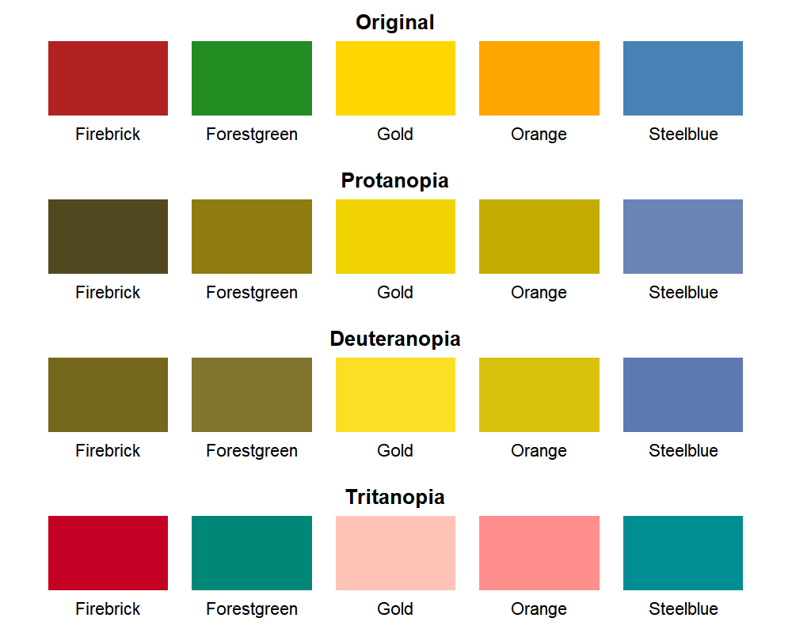
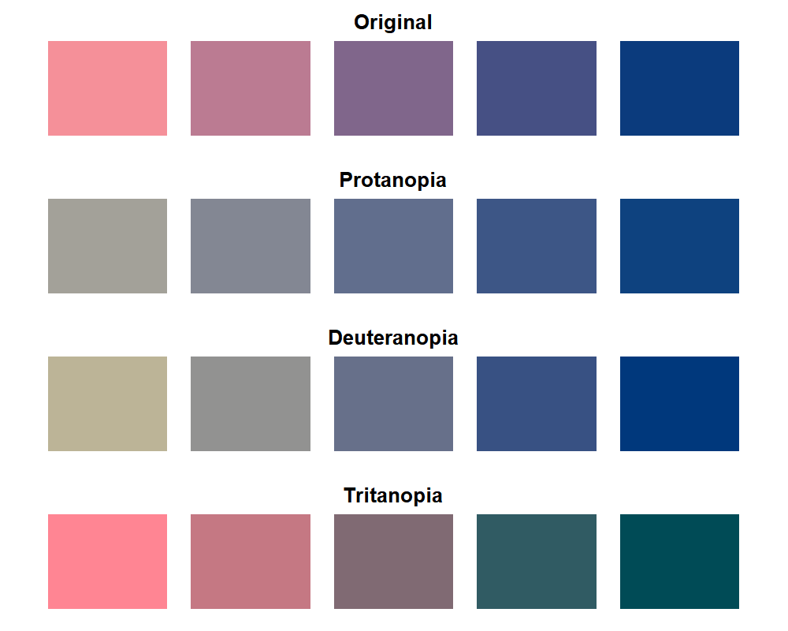

colorRanges provides lightweight tools for generating related color ranges, assigning these colors to nested categorical data, and visualizing their appearance under color vision deficiencies. Color generation and CVD simulation are based on functionality provided by the colorspace package.
The package is useful when subcategories belonging to the same broader category should be represented by related colors.
Installation
You can install the development version of colorRanges from GitHub with:
# install.packages("remotes")
remotes::install_github("ghostlab-id/colorRanges")Alternatively, devtools can be used for installation.
Exported functions
| Function | Purpose |
|---|---|
assign_color_ranges() |
Assign Related Colors to Subcategories |
create_color_range() |
Create a Color Range Between Two Colors |
validate_colors() |
Validate a Color Vector |
visualize_colors_cvd() |
Visualize Colors Under Color Vision Deficiency |
Workflow
flowchart TD
A("Color Vector") -->B("validate_colors()")
C("Single Item") -->D("create_color_range()")
E("Set of Items") -->F("assign_color_ranges()")
B -->G("visualize_colors_cvd()")
D -->G
F -->G
style A color:#000000,fill:#fcd6a7,stroke:#e89f46
style B color:#000000,fill:#ffffff,stroke:#808080
style C color:#000000,fill:#fcd6a7,stroke:#e89f46
style D color:#000000,fill:#ffffff,stroke:#808080
style E color:#000000,fill:#fcd6a7,stroke:#e89f46
style F color:#000000,fill:#ffffff,stroke:#808080
style G color:#000000,fill:#8eb6ed,stroke:#1e4985Workflow interpretation: Light-orange nodes represent the supported input types, while white nodes indicate the corresponding functions for color validation, range generation, and assignment. All three workflows can optionally proceed to the blue node for visualizing the resulting colors under simulated color vision deficiencies.
Example
Color Vector Validation
Define an, optionally named, color vector:
named_vector <- c(
Firebrick = "firebrick",
Forestgreen = "forestgreen",
Gold = "gold",
Orange = "orange",
Steelblue = "steelblue")Validate and convert color entries into hex codes:
named_vector <- validate_colors(color = named_vector)Visualize each color, incl. visualization for color vision deficiencies (CVDs):
visualize_colors_cvd(color_palette = named_vector)
The colors are displayed for four modes of color perception:
- Original — original colors without CVD simulation
- Protanopia — simulated red–green CVD associated with absent L-cone function
- Deuteranopia — simulated red–green CVD associated with absent M-cone function
- Tritanopia — simulated blue–yellow CVD associated with absent S-cone function
By default, complete CVD (cvd_severity = 1) is simulated. The severity can be adjusted between 0 (original colors) and 1 (complete simulated CVD).
Single Item
We can create a color vector of length n using the endpoints as defined by color_palette:
single_item <- create_color_range(color_palette=c("#F59099", "#0B3B7D"), n=5)Visualize each color, incl. visualization for color vision deficiencies (CVDs):
visualize_colors_cvd(color_palette = single_item)
List of Items
Define a set of variables for selected items:
item_set <- list(
item1 = c("var1", "var2", "var3"),
item2 = c("varA", "varB", "varC", "varD", "varE"))Define color ranges by specifying the endpoint colors for each item:
Assign colors to each item’s variables by interpolation between the specified endpoints:
item_colors <- assign_color_ranges(item_list = item_set, color_palette = palettes)The assigned colors for each item can be visualized using:
visualize_colors_cvd(color_palette=item_colors[["item1"]])
visualize_colors_cvd(color_palette=item_colors[["item2"]])To omit the color labels for a named color vector in the visualization, set show_names=FALSE.
Citation
If you use colorRanges in published work, please cite the package as well as the colorspace package, which provides the underlying color-space and color vision deficiency functionality.
Package citation information is available in R using:
Alternatively, the citation for colorRanges and colorspace can be copied below.
colorRanges
Spies E (2026). "colorRanges: Create and Evaluate Color Ranges for Nested Categories." R package version 0.1.0.colorspace